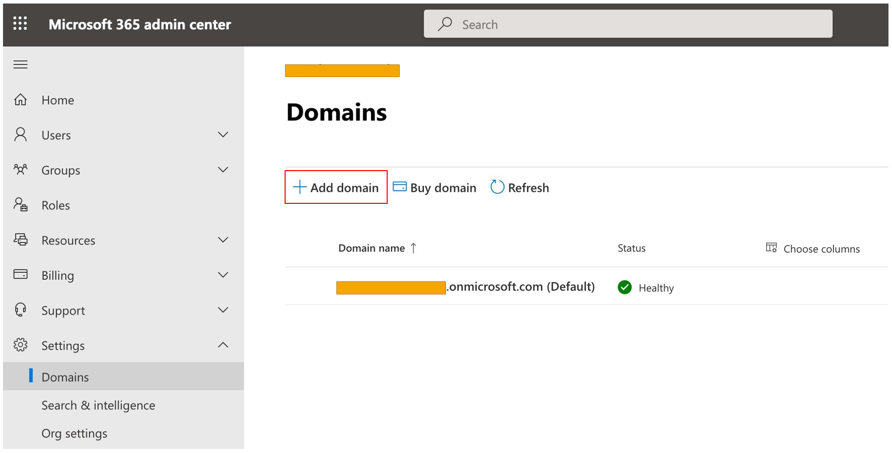
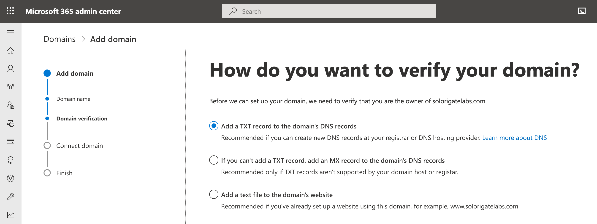
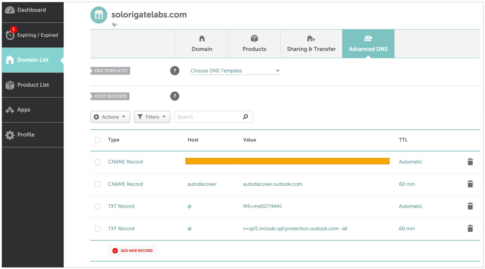
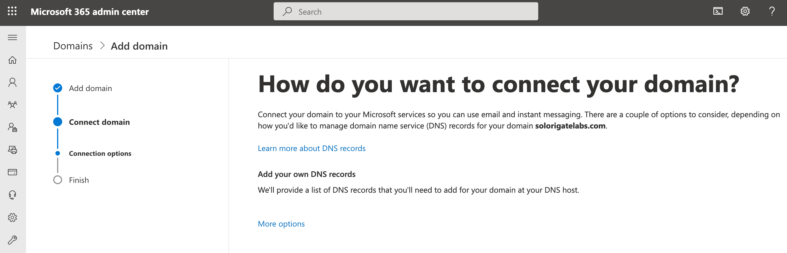
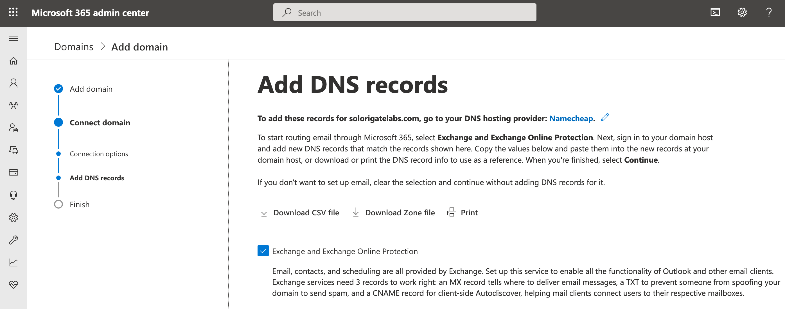
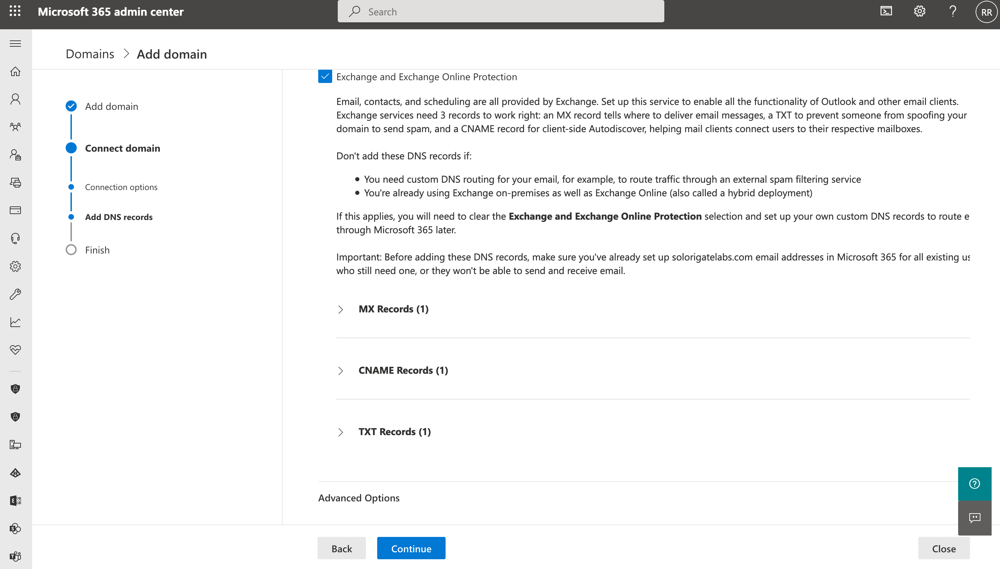
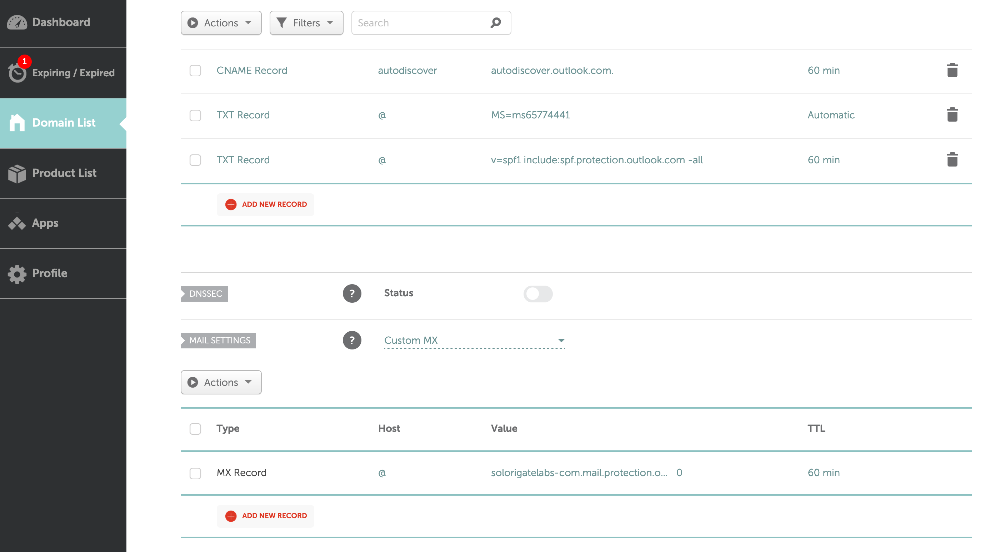
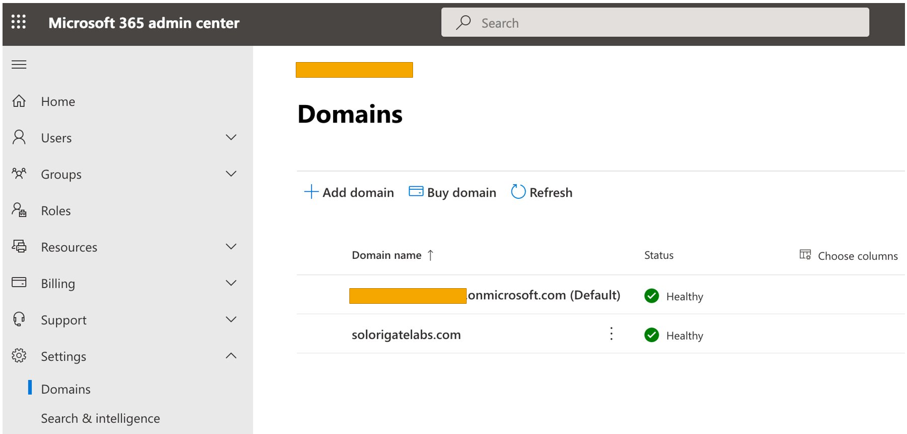

Adding a Custom Domain to Microsoft 365
I wanted to set up a federated trust between my on-prem Active Directory (AD) in my lab environment and my Microsoft 365 subscription to allow federated authentication to Office 365 applications. One of the main steps was to add the domain name I used in my on-prem AD lab to the Azure Active Directory (Azure AD) tenant of my Microsoft 365 subscription.
In this post, I will show you how to do that through the Microsoft 365 admin console.
Every new Azure AD tenant comes with an initial domain name, <domainname>.onmicrosoft.com. However, you can’t change or delete the initial domain name, but you can add new custom domain names.
Once again, if you want on-prem AD user accounts to authenticate to Office 365 apps in the cloud with the same on-prem password, you need to synchronize them with the Azure Active Directory (Azure AD) tenant of your Microsoft 365 subscription which requires you to add the on-prem domain to Microsoft 365.
What is Microsoft 365?
Microsoft 365 is an integrated bundle of Windows 10, Office 365 and Enterprise Mobility + Security (aka EMS, which includes Intune device management, analytics and some Azure Active Directory capabilities), sold on a subscription basis.
What is Office 365?
It is a set of cloud based business applications like Exchange, Office Apps, SharePoint, OneDrive. It is a part of Microsoft 365.
Quick Recipe
- Purchase Domain
- Access Microsoft 365 admin console
- Add custom domain
- Verify domain ownership
- Connect domain to MS 365 Services (Optional)
1. Purchase Domain
You need to use a domain that you already own or purchase one. If this is for a lab environment, most likely you will have to buy one. I purchased mine from namecheap.com

2. Access Microsoft 365 Admin Console
- Go to https://admin.microsoft.com
- Go to Settings > Domains
3. Add Custom Domain
Click on Add Domain as shown in the image below

Enter the name of the domain you just purchased or you already own

4. Verify Domain Ownership
You will need to proof that you own the domain. I usually choose the verification option to add a TXT record to the DNS records of my domain.

Add TXT Records to Domain Settings
- Log on to your domain provider console
- Select domain DNS settings
- Add TXT record


5. Connect Domain to MS 365 Services (Optional)
Next, you will have the option to attach specific Microsoft 365 services (i.e. Exchange) to your domain.

Add Additional DNS Records



That’s it! You have successfully added a custom domain to your Microsoft 365 subscription.


One thing you can do is check the Azure Active Directory (Azure AD) tenant of your Microsoft 365 subscription, and you will now see the custom domain there and verified. Go to https://aad.portal.azure.com

I hope you enjoyed this post!
References
- https://docs.microsoft.com/en-us/microsoft-365/admin/setup/add-domain?view=o365-worldwide
- https://admin.microsoft.com
- https://www.namecheap.com/
- https://www.onmsft.com/feature/whats-the-difference-between-office-365-and-microsoft-365
- https://www.zdnet.com/article/what-is-microsoft-365-microsofts-most-important-subscription-bundle-explained/
- https://docs.microsoft.com/en-us/microsoft-365/admin/get-help-with-domains/what-is-a-domain?view=o365-worldwide
- https://docs.microsoft.com/en-us/microsoft-365/enterprise/plan-for-directory-synchronization?view=o365-worldwide#federated-authentication
Subscribe to Open Threat Research Blog
Get the latest posts delivered right to your inbox